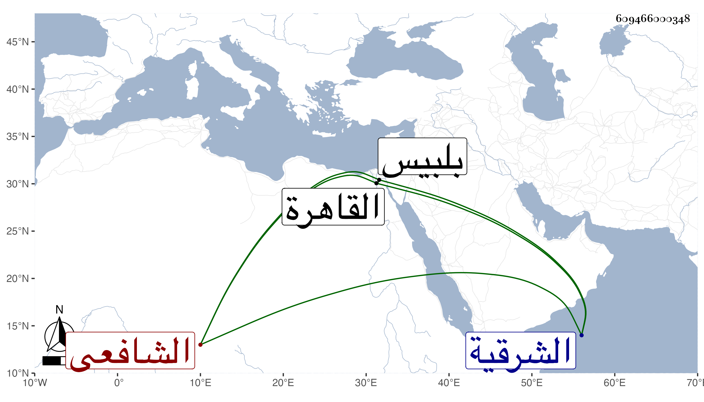

0902Sakhawi.DawLamic.ITO20230111-ara1.EIS1600.609466000348
Biography ID: 609466000348
55
محمد بن محمد بن محمود بن ماجد بن ناهض الشمس أبو عبد الله بن الشمس بن الشرف الرديني الشافعي ولد كما أخبرني به في سنة ست وستين وسبعمائة وكتب بخطه أنه في سنة ستين فالله أعلم بقرية منية رديني بمهملتين أولهما مضمومة وآخره نون من أعمال الشرقية ، وحفظ القرآن وتلا به لأبي عمرو على والده والعمدة والمنهاج الفرعي والأصلي وألفية ابن ملك ودخل القاهرة فعرض على الأبناسي وابن الملقن وأجازا له وعليهما تفقه وكذا تفقه بالبلقيني وقريبه البهاء أبي الفتح والزين العراقي قرأ عليه في تكملة شرح المهذب له بالفاضلية وسمع عليه في الحديث وغيره وبالكمال الدميري والبدر الطنبدي وعليه قرأ في الأصول والعربية في آخرين وأخذ في الألفية وتوضيحها وغيرهما من كتب العربية عن المحب ابن هشام حين إقرائه بجامع الحاكم وفي الفرائض بقراءته عن الشمس الغراقي وسمع البخاري علي التقي الدجوي في سنة ست وثمانين وكان ضابط الأسماء وبرع في الفقه وأذن له الدميري في الإفتاء . وولي القضاء ببلبيس وغيرها عن التقي الزبيري ثم عن قريبه العز عبد العزيز الرديني ثم عن نور الدين بن الملقن ثم ولي عمل منية الرديني وأعمالها عن الجلال البلقيني ومن بعده واشتهر بالعفة والديانة والصلابة في الحق والقيام على من لم يذعن للشرع وصارت له في تلك الناحية جلالة ووجاهة بحيث قصدوه بالفتاوى وانتفع به في ذلك وعولوا عليه فيها وفي غيرها ، وقد لقيته بمجلس شيخنا فاستجزته لي ولأخوي وغيرهما من أصحابنا ثم ارتحلت لبلده وحملت عنه بعض مسلم وغيره ، وكان نير الشيبة جميل الوجه مهابا حسن السمت ظاهر الوقار . مات في سنة ثلاث أو أربع وخمسين ولم يخلف هناك من يوازيه رحمه الله وإيانا .
